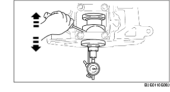
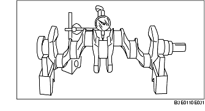
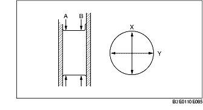
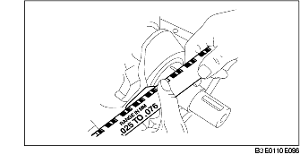

Crankshaft inspection/repair
1. Measure the crankshaft end play using a dial gauge.

- • If it exceeds the maximum specification, replace the crankshaft or grind the crankshaft thrust side, and install the oversize bearing so that the specified end play is obtained.
Thrust bearing (mm {in})
2. Measure the crankshaft main journal runout on V-blocks using a dial gauge.

3. Inspect the main journal diameter and crank pin diameter. Measurement positions total four and they are in the X and Y directions, at two points (A and B) as shown in the figure.

- • If not within the specification or exceeds the maximum off-round, replace the crankshaft or grind the journal to fit the oversize bearing.
Main journal diameter (mm {in})
- Maximum off-round
- 0.05 mm {0.0019 in}
- Maximum off-round
- 0.10 mm {0.0039 in}
Crank pin journal diameter (mm {in})
4. Inspect the main journal oil clearance using the following procedure.

- (1) Install the upper main bearing and crankshaft.
- (2) Position a plastigauge on the journals.
- (3) Install the lower main bearing and the lower cylinder block.
- (See Main Bearing Assembly Note.)
- (See Lower Cylinder Block Assembly Note.)
- (4) Remove the lower cylinder block.
- (See Lower Cylinder Block Disassembly Note.)
- (5) Measure the main journal oil clearance.